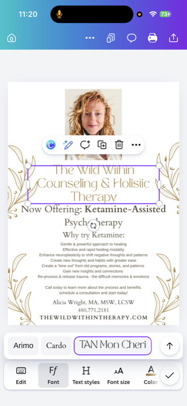

Ketamine-Assisted Psychotherapy · Mesa, AZ
Real psychotherapy. With the medicine.
KAP for treatment-resistant depression, PTSD, anxiety, and trauma. Provided by a licensed therapist. Not an infusion clinic.
Most people who land on this page have already tried a lot of things.
Years of talk therapy. Maybe medication. Maybe a few rounds of starting and stopping. You've done the work. You've shown up. You've tried to white-knuckle your way through, and the depression, or the anxiety, or the thing that happened to you when you were eight, or the grief, or the numbness. It's still there, and you're tired.
Ketamine-assisted psychotherapy is one of the most promising tools we have for the kind of suffering that hasn't moved with traditional approaches, but there's something you need to understand before you go any further: most of what gets called "ketamine therapy" in the East Valley isn't therapy at all.
KAP is not an infusion clinic.
Ketamine Infusion Clinic
- ✗ Nurse puts in an IV, you sit in a recliner
- ✗ No therapist present during session
- ✗ No preparation beforehand
- ✗ No integration session afterward
- ✗ Paying for medicine, not therapy
KAP at The Wild Within
- ✓ Comfortable setting with eye covers and music
- ✓ Licensed therapist present the entire time
- ✓ Preparation sessions to set intentions
- ✓ Integration sessions to process insights
- ✓ Real psychotherapy. The medicine opens the door
Curious if KAP is right for you?
Start with a free consultation. No pressure, no commitment.
Schedule Free ConsultationHow KAP works at The Wild Within.
Four phases. Each one matters. The therapy is what makes the medicine work.
Screening
Free consultation + medical screening with our collaborating physician. Not everyone is a candidate, and we take that seriously.
Preparation
One or more therapy sessions before any medicine. We set intentions, build trust, and prepare your nervous system for the work.
Medicine session
2-3 hours in our office. Eye covers, music, and a trained therapist present the entire time. You are never alone.
Integration
Where the real change lives. We process what surfaced. What you saw, what shifted, what wants to be different now.

Integration is where the real change lives
The medicine session opens a door. Integration is what you walk through it with. We sit together afterward and process what surfaced. What you saw, what shifted, what wants to be different now.
Without integration, insights fade. With it, they become a new way of living. That's why KAP isn't a one-time event. It's a process, held by a real therapeutic relationship.
Conditions with the strongest research support.
Treatment-Resistant Depression
When traditional therapy and medication haven't moved the needle.
PTSD & Trauma
Including trauma you've already done a lot of work on but still feel stuck in.
Anxiety
The kind that hasn't responded to other approaches.
Chronic Suicidality
With appropriate safety planning and clinical support.
Existential Distress
End-of-life, grief, and the deepest questions about meaning.
It's not for everyone. People with certain cardiovascular conditions, active psychosis, untreated thyroid issues, or some substance use histories may not be appropriate candidates. The screening exists to keep you safe.
Safety, legality, and what to expect
Ketamine is FDA-approved and legal when administered under medical supervision. At The Wild Within, KAP is provided in collaboration with a prescribing physician who handles the medical side, while I hold the therapy. Sessions happen in our office, with appropriate monitoring, and you'll have someone with you the entire time.
The experience itself is different for everyone. Most people describe a sense of distance from their usual thinking patterns, often paired with a softer, more open emotional state. Some people see imagery. Some people cry. Some people have what feel like long-buried memories surface. Some people feel held by something larger than themselves. All of it is welcome. None of it is required.
Cost & logistics
KAP is priced separately from standard therapy because of the additional medical involvement, longer session length, and integration work. Insurance does not currently cover KAP in most cases. We can talk through pricing on your free consultation.
Important: KAP is provided under medical supervision with a collaborating physician. Contraindications exist and medical screening is required. Results vary. Therapy outcomes depend on many factors. This page is for informational purposes only and does not establish a therapist-client relationship.
I'd tried everything. Years of talk therapy, three different medications, a meditation app I used for exactly one week. KAP was the first thing that actually reached the place where the pain lived. Having Alicia there during the session made all the difference.
FAQ
What is ketamine-assisted psychotherapy?
KAP is the use of low-dose ketamine in combination with psychotherapy. A trained therapist is present before, during, and after the medicine experience. The therapy is the treatment. The medicine is what opens the door.
How is KAP different from ketamine infusions?
Infusion clinics give you an IV drip in a medical setting and send you home. KAP includes preparation sessions, a trained therapist present during the medicine experience, and integration sessions afterward. KAP is therapy. Infusions are medication delivery.
Is ketamine therapy legal in Arizona?
Yes. Ketamine is FDA-approved and legal when administered under medical supervision. KAP at The Wild Within is provided in collaboration with a prescribing physician.
How much does KAP cost?
KAP is priced separately from standard therapy because of the additional medical involvement and longer session length. Contact us for current pricing.
What does ketamine therapy feel like?
At therapeutic doses, most people describe a sense of distance from their usual thinking, often paired with a softer, more open emotional state. We talk about what to expect during preparation.
How many ketamine sessions do I need?
Most KAP protocols include 4–8 medicine sessions, plus preparation and integration. We design the protocol around your specific needs.
Does insurance cover ketamine therapy?
Insurance does not currently cover KAP in most cases. We can discuss options and provide superbills where possible.
Is ketamine therapy safe?
When provided under medical supervision with proper screening, KAP has a strong safety profile. Contraindications exist, which is why medical screening is required.
What conditions does ketamine therapy treat?
KAP is most commonly used for treatment-resistant depression, PTSD, anxiety, trauma, chronic suicidality, and existential distress. It is not a fit for everyone. That's what the consultation is for.
Other ways we can work together.
Individual Therapy
Holistic, trauma-informed therapy. Many KAP clients also do ongoing individual work for integration and continued growth.
Learn moreCouples Counseling
Communication, trust, and the conflict that builds intimacy instead of breaking it. For couples ready to learn a new language.
Learn moreWorkshops & Groups
Breathwork, somatic movement, and community healing experiences. The kind of work that happens best together.
Learn moreStart with a free consultation.
No pressure, no commitment. We'll talk about what you're working on and whether KAP is a good fit.